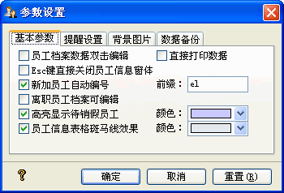
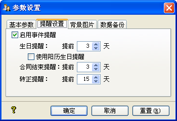
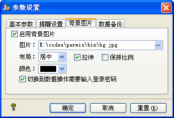
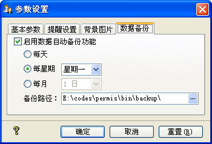

| 参数设置 |
|
参数设置分为基本参数、提醒设置及数据备份三部分，分别如下所示： Ø 基本参数  其中各项功能如下： 员工档案数据双击编辑：您在员工信息列表双击选中的员工数据时，它默认操作是显示当前的员工信息；若您想要双击后员工信息处于可编辑状态，则勾选此选项。 直接打印数据：此选项之功能在于，若不勾选，则在执行打印操作时，先显示打印预览窗体；若是勾选，则直接打印您要打印的数据。 Esc键直接关闭员工信息窗体：秋风人事档案管理系统的弹出窗体，都可以用Esc键快捷关闭；在员工信息窗体，若处于浏览状态，则可以关闭，倘处于添加或编辑状态，则Esc键先执行取消操作，然后关闭窗体。此选项是在添加或编辑状态时，Esc键直接关闭员工信息窗体。 新加员工自动编号：此选项用在添加新员工中。您可以在这里设定工号前缀，则添加新员工时，员工工号由此关缀加上已有工号最大值加1为新的初始工号。 离职人员档案可编辑：此选项决定离职人员档案是否可以编辑。 若不设定，则离职人员档案不能被编辑。 高亮显示待销假员工：您在对员工进行请假操作后，若其销假日期小于等于当前日期，则员工记录背景颜色会显示为您设定的颜色。 员工信息表格斑马线效果：主界面员工信息表格，以间隔条状颜色显示，颜色值可以自定义。 Ø 提醒设置  您可以在这里设定生日、合同结束、转正等事件的提醒功能，您可以设定各项提醒的提前天数。 若您启用事件提醒，则在秋风人事档案管理系统启动时，系统会查询数据中是否有符合条件的记录，若有则自动弹出提示窗体。 这里需要注意的是，[使用阳历生日提醒]这个选项。 您在添加或更新员工档案时，出生日期若使用的是农历生日，则此功能会把农历生日对应于今年的阳历生日，符合的数据统计出来。如某员工农历生日为1978-10-09，则对应于今年(2008年)的农历生日为2008-10-09，此农历日期对应的阳历日期为2008-11-06，则查询生日时会查询2008-11-06这个数值。 合同结束提醒：以员工档案中合同结束日期为查询依据。 转正提醒：以员工档案中转正日期为查询依据。 Ø 背景图片  您可以在这里设定秋风人事档案管理系统的背景图片。设置完成后，在主界面的工具栏上会有个背景图片的按钮。 布局：分为居中、一般、平铺三种类型。当为居中、一般时，[拉伸]选项可用，[保持比例]在拉伸选择时可用。 颜色：当背景图片没有没有设置为[拉伸]或者选择了[拉伸]并同时选择[保持比例]而使图片没有充满窗体时，窗体的背景颜色。 切换到数据操作需要输入登录密码：您若选择了此选项，则在背景图片显示模式下进行的任何操作，都需要输入操作员的登录密码。 Ø 数据备份  这里设置您的系统数据是否启用自动备份功能。若您启用自动备份，则在秋风人事档案系统运行后，系统会判断当前日期是否符合数据备份日期，若符合则会自动以data_yyyymmdd.bak为文件名备份到您指定的备份路径下，其中的yyyymmdd为当前日期的年、月、日格式化而成，如data_20081201.bak。 |